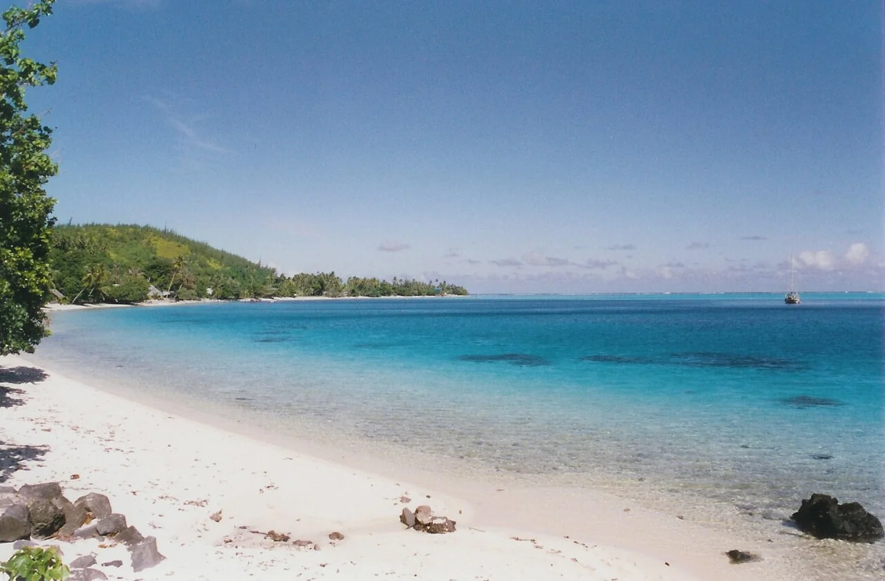

Baie d’Avea — Huahine
Huahine, Polynésie française · snorkeling, baignade

Longue plage du sud de Huahine, dans le district de Parea. Tahiti Tourisme l’appelle « la plage de la forêt » : elle s’étend sur plusieurs kilomètres et convient à la baignade et à la détente. Snorkeling Report classe le spot débutant : petits récifs avec jardins d’anémones et poissons-clowns, entre 1 et 6 m de profondeur, et un banc de sable que des raies traversent parfois. On entre dans l’eau par la plage publique, un peu au sud de l’hôtel Le Mahana. Dans les îles de la Société, la mer est à 28 à 29 °C en décembre et en janvier (Climats et Voyages : Papeete et Bora Bora).
- Lieu
- Huahine, Polynésie française
- Niveau
- Débutant
- Activités
- snorkeling, baignade
- Type d'eau
- Mer / océan
- Coordonnées
- -16.81, -150.98 (position approximative du secteur)
Dangers à connaître
- Les cyclones se forment de novembre à avril, surtout de décembre à mars, et décembre et janvier comptent parmi les mois les plus pluvieux.
- Vérifie la réglementation locale (espèces protégées, zones interdites) : visibilité et état du récif peuvent changer.
- La plage est à environ 30 minutes en voiture de Fare (45 minutes en scooter) : prévois ton transport.
Le conseil d'Ocean Buddy
Gare-toi au bord de la plage, entre par la plage publique et regarde la mer avant d’y aller : la note débutant ne vaut que par mer calme, sans vent fort, houle, forte marée ni pluie.
Ouvrir dans Ocean Buddy Télécharger sur l'App Store
Source : Fiche Ocean Buddy · décembre 2026 · d’après Tahiti Tourisme (plage d’Avea), Snorkeling Report (baie d’Avea), Climats et Voyages et Lonely Planet · à vérifier localement.